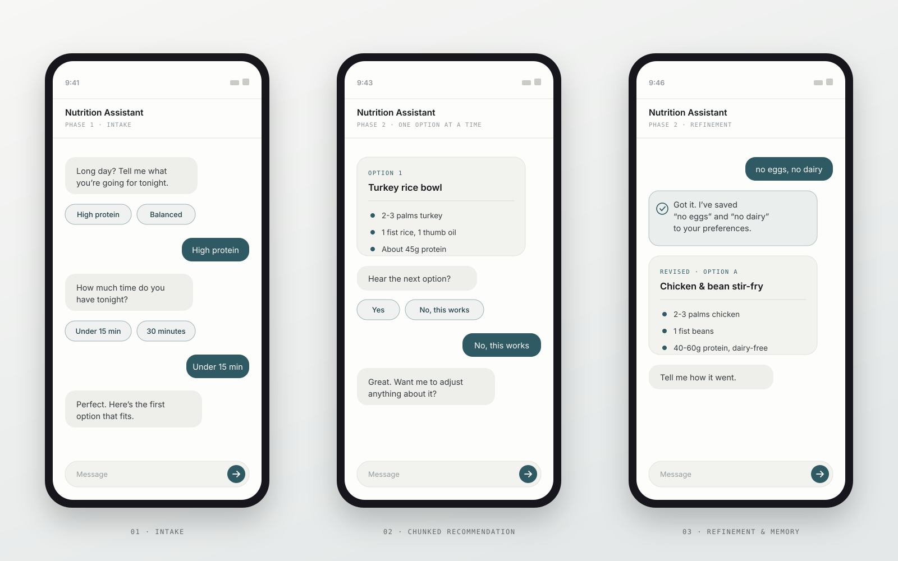
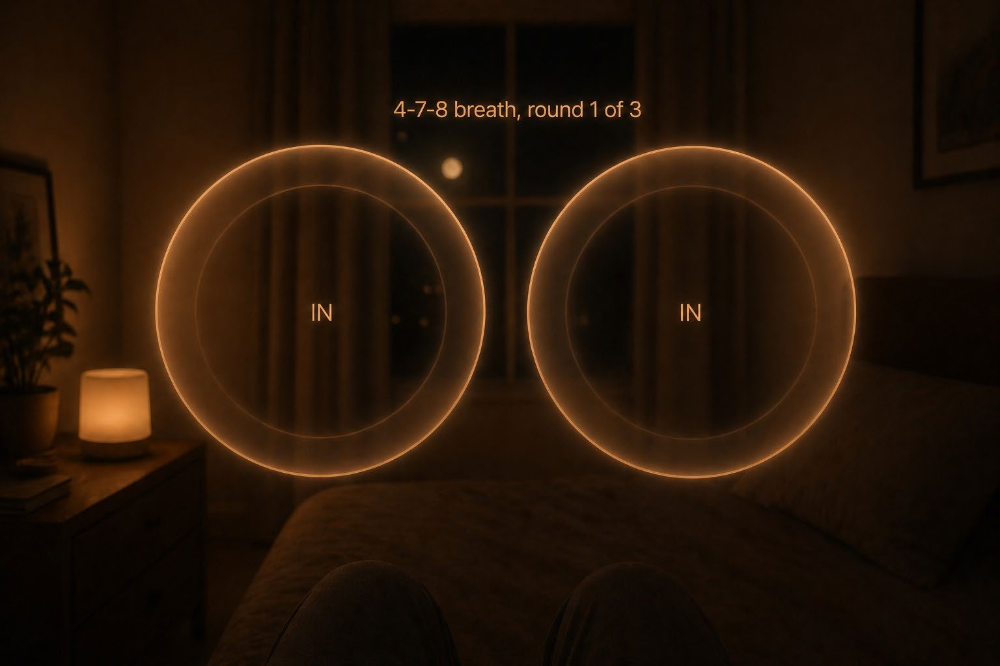
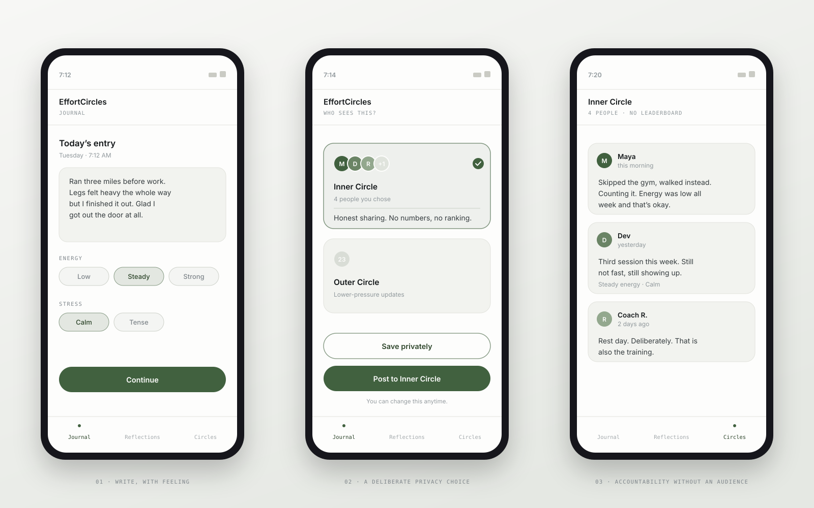
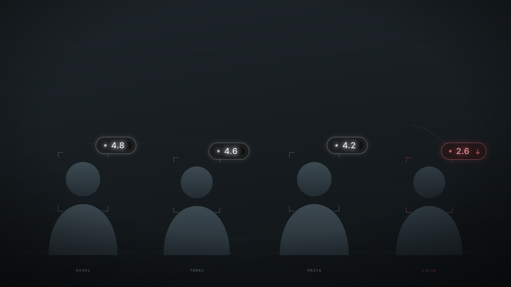

Will Smith
HCI Researcher & Designer
I research how people actually use things, then design for what I find. Most of my work sits at the moment a product asks too much of someone: tired, stretched, or one bad day from quitting. Currently an M.S. candidate in Human-Computer Interaction at Indiana University, and founder of MindfulWill.
Selected Work
FOUR PROJECTS
Nutrition Support Assistant
A Wizard-of-Oz study of a meal-planning chatbot for tired users, measuring cognitive load with NASA-TLX across eleven participants.
Read case study
Wind-Down Smart Glasses
AR glasses and IoT for sleep hygiene, prototyped from paper sketches to a tested interaction flow, using AI as a design critic.
Read case study
EffortCircles
A journaling app built on gentle accountability: privacy-first sharing, designed from interviews and validated in usability testing.
Read case study
Nosedive Ethics Evaluation
A value-sensitive design evaluation of a fictional social rating system, and the shipping products that already mirror it.
Read case study